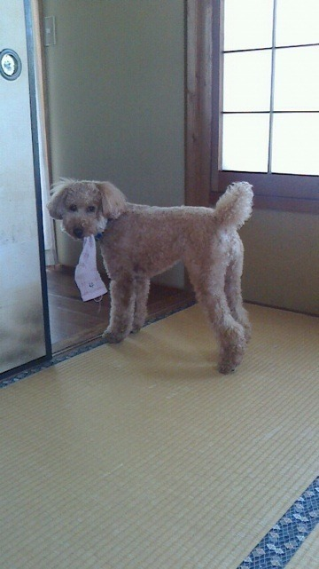

2014/0827Wed（´-`）.｡oO(かずみ ん×301
みなさん♪
こんばんメガネっ（￣+ー￣）

塩部長の高山です！
塩部という部活を作りましてですね！
塩好きの人が食べ物に塩をかける
部活なんです( 'н' )
今のところマネージャーさん1人と
なぁちゃんの
計3人！！！
少ないけど、
牛タンに塩をかけたりして
活動してまーす＼(^o^)／
大阪から始まり、
福岡、仙台、そして名古屋の
ライブが終わりまして、
ついに残すは明治神宮球場！！！
大阪、福岡、名古屋は
去年もツアーでまわらせていただいて
今年は去年より大きな会場で！
ありがたいね(*´ｰ`*人)
去年もめっちゃ楽しかったけど
今年はもっともっと楽しかった♡
みんな来てくれて、
一緒に盛り上がってくれて
ありがとう(∩*´ω` *∩)
仙台は初単独ライブでした！
ライブのキャンペーンでも仙台に
行かせていただいたのですが、
なんせ仙台は乃木どこも
放送されてないそうなので
お客さん来てくれなかったら
どうしよって心配でした∩(´;ヮ;｀)∩
でもいっぱいの人が来てくださって、
嬉しかったです！！
もちろん、各地から遠征して
くださった方もいると思います( ∩ˇωˇ∩)
感謝感謝です！本当に！
かずみんタオル、
かずみんうちわ 等々 ...
後ろの方まで全て見えました(＊´^`)♡
ありがとうね♡♡♡大好き！！
全国各地でアメイジングできて
めっちゃ嬉しかったよ＼(^o^)／
また来年、もしくはもっと早く！
皆さんの所へ伺えますようにー（＾ν＾）
明治神宮球場、燃えるぜ！！！


豚骨ラーメン美味でした♡
あと〜
前回のブログの答えはまいやんでした。
正解してる人いっぱいいた＼(^o^)／
中にはなぁちゃんと迷ったけど
爪の長さでわかったという人も！
さっすが〜♪
答えてくれた人ありがとう(∩*´ω` *∩)
続いて質問返し行くよー！！
let's go ..☆
脚を綺麗に見せたい時のお洋服の選び方のポイントを教えて下さい♡
・・・→ズボンはハイウェスト！靴はストラップの位置が重要かな♪
タピオカは何味が好き〜？
・・・→パールレディではタロイモミルクティーにチョコスプレートッピング、氷なしです。いつも！
たまーに変えるんだけどやっぱりこれが一番好きっ(*´ω`*)
セーラームーンは色々なシリーズがありますが一番好きなシリーズはなんですか？？
・・・→セーラースターズ！！
かずみんが一人暮らしにとって最強だと思う料理はなに？
・・・→おかゆ＆缶詰、白米＆いか明太...料理じゃないか？笑
今も塩でご飯食べてますか？？
・・・→はい！でも塩分の取りすぎには注意してます！
団地ともおで好きなキャラクターと最近のお気に入りの話は？？
・・・→よしのぶ！先週の3人がつるまないやつとアサガオのやつが面白かったです( *´艸｀)
海外ライブツアーを乃木坂46でやりたいと思う？
・・・→やりたい！目指すは世界のノギザカ！
体型維持するためにしてることは？
・・・→熱めのお風呂に浸かることかな！？私は45度くらいです！
かずみんが思う内房線沿線のおすすめスポットってどこですか？
・・・→館山駅の近くの中村屋っていうパン屋さんのチキンバスケットをぜひ食べて欲しい！！
一実ちゃんはドリアンは好きかな？
・・・→たぶん嫌いです！笑 くせがあるものは苦手！！
かずみんが好きな男性の髪型は？？必ずそれにするから教えてー！
・・・→黒髪か金髪(*ﾟﾛﾟ)!!前髪長めの後ろ短めが好きです。でも似合ってればOKかも♪
かずみんがスクフェスやってて1番好きな曲は何ですか？
・・・→Mermaid festa vol.1のエキスパート！
かずみんは剣道の得意技とかありますか？
・・・→合小手面とさし面でした！！
宇宙旅行に行ってみたい？
・・・→ちょっと怖いから思ったことはないな>_<
握手会でかずみんのレーンに並んでた人が隣のレーンに並んでるのとかって分かったりする？
・・・→わかりますわかります(￣▽￣)
かずみんの今現在のメンバーの推しメン教えてください！
・・・→...実は伊織ちゃん。笑
高山さんは過去にやった今考えると無茶だったなぁっていうエピソードはありますか？
・・・→剣道で肉離れを何度も起こしすぎて筋肉痛かわからなくなった！
パフォーマンスする上でかずみさんが
一番大事にしてることや意識してることはなんですか?
一番大事にしてることや意識してることはなんですか?
・・・→うーん、身体が硬いので、みんなより動ける範囲が狭いから..鏡を見て見せ方を工夫してます！あとカメラで抜かれたらウィンクしちゃう癖がある...(´ｰ∀ｰ`)とにかくステージ上ではキラキラのアイドルでいたい！！
努力は必ず報われると思いますか？
・・・→努力＋運ですね。運だけで報われることもあると思うけど、それだと長続きしないと思う！
ミラクル9以外で好きな番組は何ですか？
・・・→アメトーク！！UTAGE！
かずみんはスイカとメロンどっちが好きですか？
・・・→スイカは苦手なのでメロンで♡
パフォーマンスしている時でも乱れないサラサラな綺麗な髪の毛は、何か特別なお手入れをしているのでしょうか？
・・・→いやいや>_<めっちゃ乱れますよぉ(´口`)お手入れは痛んできたなぁと思ったらトリートメントに行くくらいです！
一実ちゃんは歴史は好き？
・・・→苦手(つд；)政経が好きです。でも幕末高校生見てから勝海舟さんと西郷隆盛さん好きになった！
かずちゃんは後輩メンバーにごはんを奢ったりするんですか？
・・・→まだ奢ったことないかな>_<笑 2期生の子とご飯行きたいー（＾ν＾）
千葉県民の魂と云われる、なのはな体操。
かずみんは踊れる？
かずみんは踊れる？
・・・→もちろん！運動会では毎年してましたから(*´ω`*)!!
ミラクル９のアイドル枠と言ったら
大家さん 大家さんと言ったら
「漢字バラバラの女王」
じゃあ かずみんがなるとしたら
どんな女王になりたい？
大家さん 大家さんと言ったら
「漢字バラバラの女王」
じゃあ かずみんがなるとしたら
どんな女王になりたい？
・・・→ひらがなクロスワードの女王！
ソニレコのＭＣをメンバーの誰かに譲らなくではならなくなった場合で番組の責任者から誰か指名してほしいと言われたら誰を指名する？
・・・→ソニレコを譲るのは寂しいよ...(T_T)でももし、もし何かあって譲ることになったらまあやで！笑笑
この場を借りて
Kちゃんご結婚おめでとう(*´ω`*)ﾉ
この間ソニレコの収録があって、
そのときに直接言えてよかったです！
麻里さんと末永くお幸せに...♡

それではこの辺で〜(*´ω`*)ﾉ
皆さんできるだけぐっすり寝てね！
私も明日朝起きれるかな>_<
がんばろー！！
ななみん大丈夫かな(T_T)？
心配です。
ではでは
おやすみなさい...☆
2014/0819Tue（´-`）.｡oO(かずみ ん×300
やっぽ〜♡
いつも応援ありがとうヽ(´>∀<`*)ﾉ
【B.L.T.】9月4日発売「季刊 乃木坂 vol.3」高山一実のメイキング動画 が公開されました！
素敵に撮っていただきました♪
よかったらチェックしてみて下さい！
今週の乃木どこは見てくれたかな^^？
妄想恋愛企画を
やらせていただきました！
ちょっとベタ過ぎたかしら！？？笑
宿題っていう響きがいいなぁと。
人生はまだまだ長いけど、もう義務教育時代は戻ってこない(´・ω・｀)
妄想は自由だー！！笑
楽しかったです(*´ｰ`*人)
私服はこんな感じでした♪
＊とっぷす
→ロマンティックスタンダード
＊すかーと
→スナイデル
＊かーでぃがん
→GU
＊くつ
→R&E
----------
夏のツアー2014も
先日大阪初日を無事終えました！
来てくださったみなさん、
ありがとうヽ(´>∀<`*)ﾉ
アリーナはもちろん、
スタンドの後ろの方まで
タオルや団扇が見えました〜♡
かずみんコールもありがとう！
嬉しかったよ〜(*´ｰ`*人)
本当に楽しかった♡
おおきに〜♡
まだまだライブ続くよ！
頑張っていくぜぜぜぜぜーい！
ここで！
お約束してた質問返し
しちゃいま〜す♡♡♡
いっくよー！！！
香水まだメロンのやつ使ってますか？
...→変えました！今はこれ！
コンビニなら何が好き？
...→コンビニ自体が大好きです！笑
勉強で疲れた時どんなリフレッシュして切り替える？
...→自習室にいたときはお菓子食べたり、ちょっと外出て友達とおしゃべりして休憩を入れてたよ！
今ギャグに困ってて、なにか面白いギャグないですか？
...→ギャグに困ってるの！？笑 芸人さん！？
鹿児島に来たことありますか？また、鹿児島のイメージを教えてください。
...→ないです！鹿児島って凛々しいイメージです(*ﾟДﾟ*)
ななみんとのおもしろエピソードあったら教えて〜( ´▽｀)
...→この前ななみんと2人で牛丼食べに行って、2時間以上喋った！笑 ジョナサンとか焼き鳥とか、よくご飯食べに行きます♪
お財布なに使ってる！？
...→可愛い長財布です(*´ｰ`*人)
なんでそんなに脚長いし、綺麗ん！？
...→いやいや(´口`)洋服でカモフラージュしてます！笑
パンだったらなんのパンが好きですか？？
...→おやきか桜あんパン！
かずみん最近ディズニーには行ってる？
...→この前D＋まあやと♡♡相変わらず仲良しです！
かずみんは握手で一番なにを大切にしてますか？＼(^o^)／
...→私は滑舌が悪いので、たまに話が伝わらなくて申し訳ないです...握手会ではみんなと沢山お話しがしたいし、自分のことも知ってもらいたいです！
握手会の時、こっちが年下ならタメと敬語どっちの方がいいですか??
...→好きな方でいいよ(*´ω`*)ﾉ
モバメのお返事ってブログのコメント欄に書くのとメールに返信するのどっちがいいですか??
...→コメントがいいなあ(*´ｰ`*人)
かずみん最近はどのアーティストの曲きいてるの？
...→ディズニーメドレーとかμ'sさんとかが多い(っ`∀´*)ラブリーファンシーなのを最近聞いてます！
静岡県出身なのですが、ズバリ！静岡県のイメージは？？
...→空気が美味しい！穏やか！素敵！
かずみんは夏といえば これっ！てゆう
食べ物ありますか(｀_´)？？！
食べ物ありますか(｀_´)？？！
...→モロヘイヤ！今年まだ食べてない...涙
今年の夏は海に行く予定ある？
...→行ったよ！！子供たちが可愛かった♡
かずみんは足が痺れたら
ツンツンしますか？
それとも痺れが治るまで放置しますか？
ツンツンしますか？
それとも痺れが治るまで放置しますか？
...→痒いやつだよね？笑 ツンツンします。
握手会で印象に残るのはどんな会話ですか？
...→やっぱり何回も来てくれる人との会話は印象に残りますね！
あと好きなアニメとか曲とかの話も！
最近かずみんが努力したものってなに？(´･Д･)」
...→まだ言えないけどあれ！笑
かずみんは千葉県富津市のマザー牧場に行った時なにが1番楽しみですか？
...→マー牧は子豚のレースが大好きです！笑
乃木坂46に入って良かった事は？
...→まず、アイドルという夢を叶えてもらったし、色んな人と握手会やイベントでお話しできること、あとは友達とか家族の大切さに改めて気づけたことですかね。
得意料理は何？
...→オムライス！
最近のチームDの活動は！？
それと飴鞭では活動してないの！？
...→Dとはこの前ディズニーに行ったよ！ひなちゃんとも相変わらず仲良いし話すけど、最近遊んだりはしてないな〜
かずみんはかわいいって言われるのと
綺麗って言われるのどっちがいい？
綺麗って言われるのどっちがいい？
...→可愛いかな？綺麗も嬉しいけど♡
かずみんは｢大曲の花火｣って知ってる!?
...→聞いたことある！有名なやつだ！
次の握手会でかずみんに初めて会いに行くんですが、なに話したらいいですか？
...→嬉しいです！緊張なさらずにリラックスしていらしてください(*´ω`*)ﾉ
番組の準レギュラーを取るために日頃勉強したり、ニュースや新聞読んだりしてますか！？
...→多少義務教育の復習をしてまする！
かずみんはお祭りのとき屋台で何の食べ物買う？
あとかき氷は何味が好き？
あとかき氷は何味が好き？
...→かき氷は絶対買う！イチゴとメロンとコーラが好き♡
かずみんの人生プランは？
...→ん〜願望は29歳くらいで結婚したいです。アラサー！
W杯どこ優勝するとか予想してたあ?
どこの国のどの選手注目してたとかあった?
どこの国のどの選手注目してたとかあった?
...→高校生の時、うちのクラスの子がみんなメッシメッシ言ってたので、W杯＝メッシのイメージ！！笑
かずみんってどこで洋服買うことが多い？
...→裏原か渋谷！！マルイ！
シュープリームララ好き！
先日USJでハリーポッターのアトラクションが始まりましたがかずみさんはハリーポッター好きですか？
...→台詞を暗記してるくらい好きです。ポッタリアンです！
かずみんは明日世界が終わるとしたらなにをする？？
...→家族に私を産んでくれてありがとうって礼を言う。そしてそのまま地元にいます。
いま1番行きたい場所はどこですか〜(^_^)？
...→USJ！！！ハリーポッター！
好きな柔軟剤の香りを教えて〜！
...→レノアハピネス♡♡
柔軟剤は少し強めの香りが好きです！
今日はここまで( ∩ˇωˇ∩)
昨日はね仕事終わりにタピオカを
買って来てもらいました♡
美味しかったー！！！
タピオカらぶっ(*´ｰ`*人)
多いときは週5で
タピオカ飲んでた〜笑
右にいるのはだーれだ( *´艸｀)？
今日もこれからお仕事〜( ∩ˇωˇ∩)
頑張ってきます！！
それではまたねっ(*´ω`*)ﾉ
おばさんからもらった
チーバくんTシャツがお気に♡

( ´ ▽ ` )ﾉ
2014/0813Wed（´-`）.｡oO(かずみ ん×299
みなさん！やっぽー！
前回のブログ、たくさんのコメント
ありがと(´;ω;`)♡
心にくる優しいメッセージをみて、
安心しました。
選抜に必要だよって言ってくれる人が
いっぱいいたから、嬉しかったです。
これからも、頑張るね∩ˇωˇ∩！
ライブのリハや新曲振り入れ、
FNSのリハなどで、
怒涛の日々が続いております。
忙しいことはありがたいです！
さすがに肩こりやばすぎて
この前なぁちゃんとマッサージ
行ってきた(￣▽￣)
なぁちゃんブログでも
書いてくれてたけど！
いやぁリフレッシュ大事ね♪
また行こうなぁちゃん(^O^)／
若月ブログに私のことを
載せてもらってます！！！
なんか昨日若月から
色んなこと聞かれるな！
メモとってるし！なんだ！？笑笑
と思ったらブログでのQ＆A企画を
初めたんだね若月＼(^o^)／
記念すべき一回目が
私高山だったの＼(^o^)／ありがたや
アメイジング！
あぁ、
キャラメルポップコーン
食べたくなってきた(つд；)
映画館行くとポップコーンは
絶対買っちゃう！！！
キャラメルが好きぃ(∩*´ω` *∩)
ああと実は...塗装に興味ある。笑
空の絵を将来天井に
ちりばめたいのです！！
私も一眼レフの企画前やってたなぁ...
時間がなくて辞めちゃったけど...
またできるときにやろう！！！
※あとみなさんに告知と言うか...
来週の乃木どこ、見てね〜〜！！
高山の大好きな妄想恋愛企画です♡
今回も頭をフル回転させて
がんばりました(∩*´ω` *∩)
緊張したぁ(´口`)
ラブリーKAZをぜひ見てください♡
いくちゃん久々♡(っ*´x`)っ
肩にのってるいくちゃん
かわいすぎヽ(´>∀<`*)ﾉ
夜からのFNS頑張るね〜♪♪
メイク中の写真〜！！
真夏が後ろにいる〜^ ^
れいか、最近この眼鏡を
気にってるらしくて、
今これでみんなで遊んでまーす！笑

次から質問返ししていくね(*´ω`*)ﾉ
ではでは♡
see you...♡
2014/0805Tue（´-`）.｡oO(かずみ ん×298
10枚目の選抜発表が
昨日放送されました。
次のシングルは15番の位置です！
いつもの16番で名前を
呼ばれなかったので、
今回の選抜発表は今までで
一番緊張しました(;_;)
...一年前のガルルの時の選抜発表も
同じように16番で
名前を呼ばれなかったです。
でもその時は...福神に入れるかな？
という期待が少し持てていたり。
一年経って今はもう..
そう思えなくなってた自分がいました。
どんどん自分に
自信がなくなってるんだなぁ。
ポジティブって言い聞かせては
いるんだけど...
それでも信じてくれてたみなさん、
ありがとう。ごめんね。
ポジティブ、ポジティブ。
高山一実を10thも選抜メンバーに
選んでいただき、
本当にありがとうございます。T_T
私のファンの人たちはね、
"僕(私)のセンターは上手だよ"って、
"16番も好きだけど8福神に
戻ってくれたらもっと嬉しいな"って
そう言ってくれたのずっと。
高山は
疲れるとすぐ寝ちゃうし、
ブログとかモバメとかまめじゃないし、
頑張ろうと思っても寝ちゃうし、
声も顔も可愛くなくて、、
だめだめ人間(｡-_-｡)
それでも笑顔で支えてくださる
ファンの皆さん、
今の私を受け止めてくれて、
尚且つ期待もしてくれてた。
めっちゃ優しいでしょ(#^.^#)？
私の自慢のファンの皆さんなの！
皆さんが私の誇り！
15番の位置になっちゃったから
んー...どうしたらいいか
わからないよね(;_;)ごめんね。
私も正直わからない！！
上手端じゃないからふざけたこと
言わなくていいのか！？
サイドバックじゃないから
長友選手じゃなくて誰なんだ！？
わからないヽ(´o｀；
10thを15番で頑張っても
次はアンダーになるかもしれないし
16番に戻るかもしれないし、
奇跡が起こってセンターにな...
りはしないけどT_T
そんなわからないことだらけだけど
私からみなさんに、
お願いしたいことは1つ。
今回はいつもよりちょっと視線を
左に向けてもらって、
今まで以上にずっと、
私を見ててください^ ^
お願い...ね？
乃木坂が好きだからね、
こんな私だけど頑張るよ〜（；＿；）
ミラクル9準レギュラー目指すし
バラエティ出たら次も乃木坂が
呼ばれるように頑張る！！！
それが私の1つの使命だから！
今日、仕事終わりに歩いてたら
通りすがりの女の子たちに
バラエティ見てます！
選抜おめでとうございます！
10枚目も頑張ってくださいって
言ってもらえて、凄い嬉しかったな〜
乃木坂知ってくれてる人、
増えたなーって改めて感動します。
（；＿；）
ありがたいです。
世の中のみんなに好かれることって
難しいと思うけど、
人から嫌われることほど辛いものは
ないから...
たくさんの人から愛される
人間になりたいな。
そのために笑おう！毎日笑おう！
...終わり！
内容がまとまらなかったけど
気持ちは伝わってたら嬉しい＞_＜
10thは大事な区切りになる。
頑張るのは当たり前だけど
頑張るしかない！！
皆さん、10枚目まで乃木坂を
支えてくださって
ありがとうございました。
皆さんのおかげです！
これからも乃木坂46は
突っ走っていきます！
よろしくお願いします(*´ω`*)ﾉ

2014/08/05 00:00｜個別ページ｜コメント(1220)
2014/0803Sun（´-`）.｡oO(かずみ ん×297
バケラッタ(*´ω`*)ﾉ
ブログの番号、重複してました！
ごめんなさい！
今回が297です〜♪
お口きゅっ
いつも応援ありが10(∩*´ω` *∩)
昨日の夜、音楽の日の生放送
見てくれたかな？？
久々においシャンしたーヽ(´>∀<`*)ﾉ
そして昨日は
握手会もありました(*´ｰ`*人)
3部から5部で
浴衣着たよ〜(∩*´ω` *∩)
お母さんの浴衣を借りたの！
みんなと撮った〜(∩*´ω` *∩)
珍しく真ん中にしてもらったの♪
いぇい！！！
人中を作ってるなぁちゃん。
なぁちゃんのウィンクの
破壊力ったらすごい(*ﾟﾛﾟ)!!
かわいい！！kawaii
いっぱい話せて嬉しかったです！
来てくださったみなさん
ありがとうございました♡
-------------
あと、最近は
この前久々に映画見てきた\(^3^)/
幕末高校生を見てきました！
勝海舟と西郷隆盛が
めっちゃ好きになった！！！
勝海舟さんはポジピースが
この世で一番似合う人だと
思いました( ∩ˇωˇ∩)
人として尊敬！！
そしてYahooNEWSを見て叫んだ！
15周年記念でデジモンアドベンチャー新シリーズ製作決定！ 2015年春公開
だそうです！
やっったぁぁあーー！！！！
アメイジング＼(^o^)／
17歳の太一ですって！見たい！！
セーラームーンにしても
デジモンにしても
私の好きなものが続々と新シリーズ化
されてる...(´;ω;`)♡♡♡
嬉しい...♡
みなさん、来年の春まで一緒に
楽しみにデジモンを待とう！！！
ではっ今からお仕事、
行ってきまーす(σ・з・)σ

うちの、足長犬。